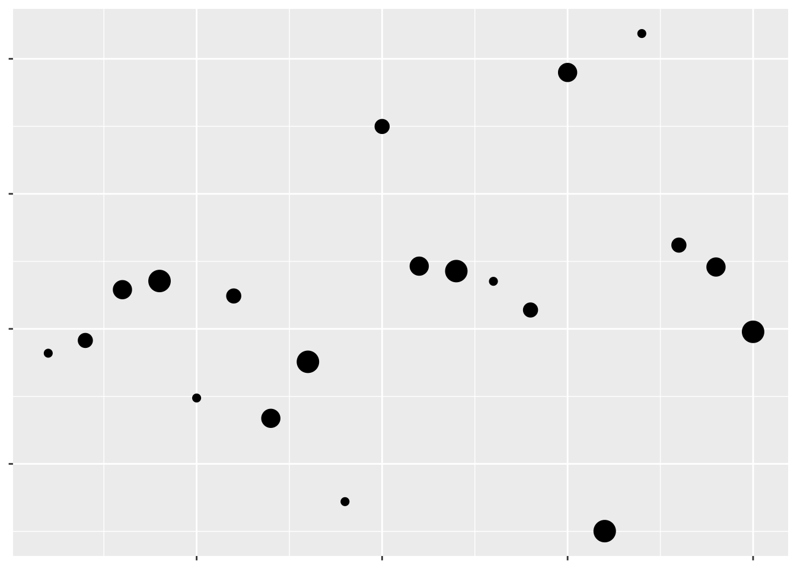

7 Achieving Graphical Excellence
7.1 Work in Progress
library(tidyverse)## -- Attaching packages --------------------------------------- tidyverse 1.2.1 --## v ggplot2 3.0.0 v purrr 0.2.4
## v tibble 1.4.2 v dplyr 0.7.4
## v tidyr 0.8.0 v stringr 1.3.0
## v readr 1.1.1 v forcats 0.3.0## -- Conflicts ------------------------------------------ tidyverse_conflicts() --
## x dplyr::filter() masks stats::filter()
## x dplyr::lag() masks stats::lag()library(cowplot)##
## Attaching package: 'cowplot'## The following object is masked from 'package:ggplot2':
##
## ggsavehttps://www.jstor.org/stable/2288400?seq=1#metadata_info_tab_contents http://www.psych.utoronto.ca/users/spence/Spence%202005.pdf http://vis.stanford.edu/files/2010-MTurk-CHI.pdf http://www.ggplot2-exts.org/
Look at this scatterplot: 
Hopefully we can already tell that this isn’t a great graph. The complete lack of text means we have no idea what data are being visualized, or what the takeaway message is supposed to be. Remember, graphs are for storytelling and demonstrating your point, not necessarily for giving exact values - you should include tables in your document if the exact values are important.
Even so, we can tell just from this scatterplot which points have larger values than others - they’re the ones further up and to the right. That’s because we’ve been trained to see position as an ordered aesthetic in graphs.
Position isn’t the only way to communicate which values are larger than others. For instance, if we want to show the level of a third variable, we can use color:

Which of these have a larger value of that third variable?
Most people would assume the darker colors have the larger values, due to their higher contrast with the background. If we make the contrast less obvious, it becomes much harder to tell what the color is supposed to convey:

But at the same time, even contrast isn’t quite enough for us to automatically interpret a color in a graph. For instance, the rainbow colors have different amounts of contrast against a white background, but when plotted:

Which values are higher now?
Humans make connections between different colors based on their luminance and chroma. We won’t go wading too far into what those terms mean; but it’s important to understand that the actual colors you use to compare values matter less than the differences in their shade and intensity.
Moving away from color, we can also use other aesthetics to communicate a third variable. For instance:

Which values are larger?
We have one last aesthetic that we can use to show our third variable - the shape of the points:

Which values are larger?
As we can see, some aesthetics communicate quantitative data very well, while others should only be used for qualitative purposes. We already knew this - we touched on it in our first unit. But getting a sense of what representations are appropriate for our data - and what sorts of things we’re able to do with it - is the first step towards creating worthwhile graphics for whatever business or research purpose you have.
Different
Animation paper on silencing
github commenting your code